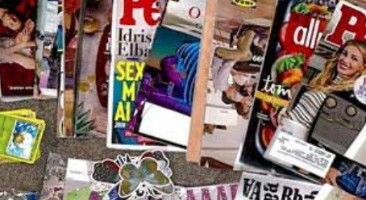
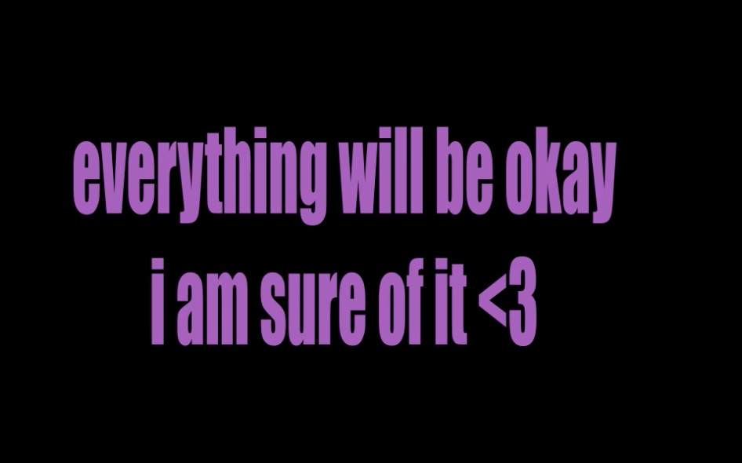
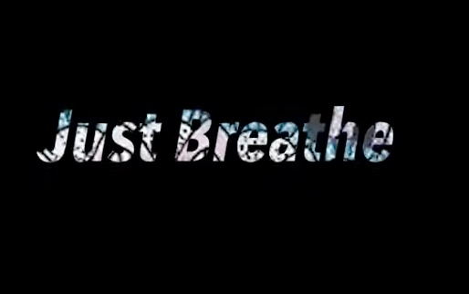
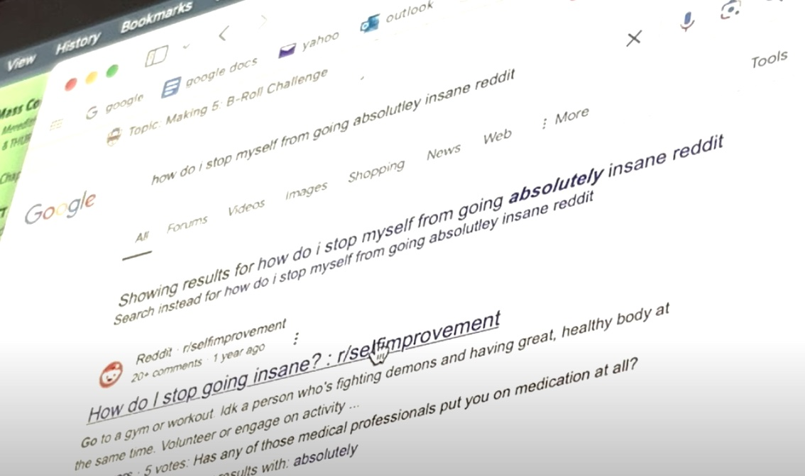
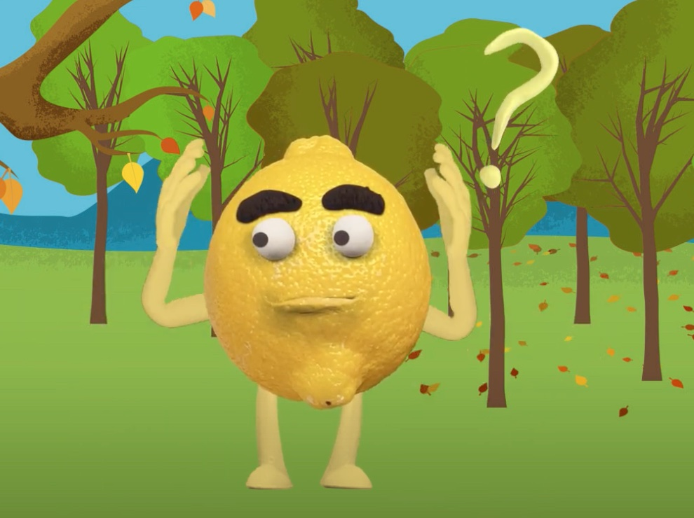

Phase 2/3: Expository Documentaries and Animation Effects
Photo Essay

Creating a photo essay allowed me to begin experimenting with video. For this specific project, I struggled with uploading to YouTube in the correct format. It uploaded as a 360 degree video and I could not figure out how to change it. But, this problem did not occur with any of my other projects.
After Effects

For this video, I explored animating texts. I followed the YouTube tutorial, and found myself re-watching the video over and over. I eventually figured out how to get it right, but it did take some time paying attention to what buttons do what.
Interview
This interview that I conducted was about mental health coming from a college student's perspective. I interviewed my friend Lizzy about the various ways that mental health can affect a person, especially in college. She gave me the ideas that everyone experiences mental heatlh in different ways.
Premier Pro

This project was my very first project exploring moving text. I used the phrase "Just Breathe", with an animation similar to the feeling of taking a breath, in order to give a relaxing sensation. This project was also anther one that I had to re-watch the tutorial a few times to understand what I was doing.
B-Roll

The B-Roll project has been one of my favorite projects that I experimented with. I enjoyed shooting and editing video, and having access to this app really allowed me to dive into video editing. I chose to do this project around the feeling that every day is the same, especially when going through mental battles.
Character Creator

Animating a character was a fun experiment using Character Creator. It allowed me to see how animating a character is pretty simple, especially if you have access to a mic and camera. My lemon character was humourous and I may potentially create a more in detail character in the future.
Phase 2/3 Course Goals
1. Foster the creative habits of mind
With this round of creations, I was rreally able to do a lot more experimentation. I enjoyed creating editing videos and exploring the different forms of animation. I was able to come up with different creative concepts and come closer and closer to what my ideas were going to be for my final project. I challenged myself to keep going even whenever I could simply not figure out how certain tutorials worked. I struggled with some of the assignments, but I kept going and allowed my creativity to take over as much as I could.
2. Engage with others in a workshop environment
Throughout these couple of modules of work, I learned a lot from my classmates. While working in groups, my fellow classmates helped me workshop some of my ideas and helped me with any questions that had arised. At times I was able to figure out where I was going wrong with the help of others. Along with this, it was relieving talking to others about problems because I quickly learned that I was not the only one who struggled at times.
3. Think deeply about craft
For these projects, I really dived deep into mental health. I knew I wanted my final project to be about the combination of art and mental health, so I tried my best to put those ideas into every project I completed. For a lot of them, I thought about the end goal of this class, and I feel as though I learned a lot about the art of digital compostion.
4. Engage in sustained research and skills development.
Building off of what I have said previously, some of these projects were a struggle for me to understand. A lot of the time I found myself in a frusterated spot because I could just not figure out what I was doing wrong. I would watch the posted tutorials and still question what was happening even though I was following it step by step. Eventually, I was able to figure out what I did wrong each time. I learned that the smallest move can cause the biggest impact. It's important to pay attention to detail and re-watch the tutorials as many times as needed to really understand wehre you go wrong.
5. Learn to present your work
Presenting is a big part of this class, and I believe that presenting my own work, as well as seeing others' was beneficial to my time in the class. I made some works that I was proud of and I learned that presenting with others gives inspiration and allows for feedback to benefit future projects. It was very helpful to share and to recieve ideas and thoughts about exchanged topics.
generated by Pitt Fuego
“Why make a spark when you can light a fire?